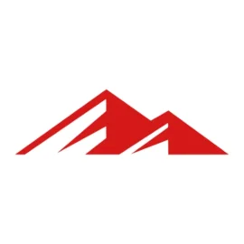
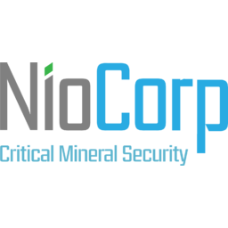

Et af de … temaer i NewDeal Invest
Råstoffer
Råstoffer er de metaller og materialer, som teknologien er lavet af.
Det kan være kobberet i ledningerne, lithiummet i batteriet eller magneterne i en elmotor. Temaets selskaber bryder metallerne i miner, skiller dem ad eller laver materialer på fabrikker. I fonden består temaet af … selskaber.
Her udforsker du fondens selskaber i temaet. Udvalget dækker ikke hele teknologiområdet.
AI-genererede forklaringer og forenklede illustrationer · Om indhold og kilder
Her udforsker du fondens investeringer, ikke en fuldstændig gennemgang af teknologiområder eller selskaber. Selskabsbeskrivelserne bygger på selskabernes egne oplysninger og øvrige angivne kilder. De er ikke manuelt faktatjekket af NewDeal Invest og kan indeholde fejl eller være forældede.
Illustrationerne forenkler sammenhængene. En forbindelse viser ikke i sig selv et dokumenteret kunde- eller leverandørforhold. Fondstal vises særskilt med kilde og dato. NewDeal Invests egne kommentarer og citater er angivet med afsender og kilde.
Forandringen
Råstoffer er blevet politik
Elbiler, elnet, datacentre og våben har brug for metaller, som tidligere kun interesserede få specialister. Det gælder kobber til ledninger, lithium til batterier og sjældne jordarter til magneterne i elmotorer.
Samtidig er råstoffer blevet politik. Kina stod i 2025 for over to tredjedele af verdens mineproduktion af sjældne jordarter og strammede i april 2025 sin eksportkontrol. EU har sat som mål, at højst 65 % af et strategisk råstof i 2030 må komme fra ét land uden for EU.
Mange af temaets selskaber har allerede miner og fabrikker i drift. Andre har kun et projekt, som skal have penge og tilladelser, før der kan komme metal ud af det.
- Kina270.000 ton69 % af verden
- USA51.000 tonHer ligger MP Materials' mine Mountain Pass
- Australien29.000 tonHer ligger Lynas Rare Earths' mine
- Burma22.000 ton
- Resten af verden18.000 ton
Tallene for 2025 er USGS' skøn. I alt 390.000 ton.
Se indenfor
Hvad er en elbil lavet af?
Træk luppen hen over bilen for at se, hvad der gemmer sig under lakken. Hver gang du finder en del, kan du se, hvilket råstof den er lavet af, og hvilke af fondens selskaber der leverer det.
0 af 5 dele fundet
Find delene
Træk luppen hen over bilen. De farvede prikker viser, hvor der er noget at finde.
Fem råstoffer i én bil
Magneter, batteri, ledninger, elektronik og lak kommer fra fem af temaets seks grupper. Den sjette, antimon, niobium og wolfram, bruges bl.a. i stål og i forsvarsindustrien.
Motoren
Magneter med neodym
Elmotoren bruger magneter med neodym, en af de sjældne jordarter. Stofferne er svære at skille fra hinanden, og Kina står for det meste af produktionen.
Sjældne jordarter og magneter i fonden
Batteriet
Lithium
Batteriet er lavet med lithium. I 2025 gik 88 % af verdens lithium til batterier.
Lithium og batterimetaller i fonden
Ledningerne
Kobber
Strømmen løber fra batteriet til motoren gennem kobber, som leder strøm og varme godt.
Kobber i fonden
Elektronikken
Sølv
Sølv bruges i elektronik. I USA gik en fjerdedel af sølvet i 2025 til elektrisk udstyr og elektronik.
Guld og sølv i fonden
Lakken og airconditionen
Titandioxid og kølemidler
Det hvide farvestof titandioxid giver lakken farve, og airconditionen køler med et kølemiddel. Begge laves på kemiske fabrikker.
Kemi og specialmaterialer i fonden
Forretningsmodellerne
Seks slags råstoffer i fonden
De fleste selskaber tjener penge på at sælge et metal eller et materiale, og prisen på det afgør meget. Selskaber markeret med "projekt" har endnu ingen produktion, og "opstart" betyder, at produktionen netop er begyndt. Bjælken viser, hvor meget hver gruppe fylder i fonden.
Sjældne jordarter og magneter
…af fonden
Sjældne jordarter er grundstoffer, der ikke er specielt sjældne, men svære at skille fra hinanden. De bruges mest til magneter, fx i elmotorer. Gruppen rummer både miner, selskaber, der skiller stofferne ad, og et selskab, der laver selve magneterne. De tjener på at sælge metallerne eller magneterne.
- MP MaterialsEjer og driver minen og forarbejdningsanlægget Mountain Pass i Californien. Største producent af sjældne jordarter på den vestlige halvkugle ifølge selskabet.
- Lynas Rare EarthsBryder sjældne jordarter ved Mt Weld i Western Australia og fremstiller separerede oxider i Malaysia.
- Energy FuelsProducerer sjældne jordarter, siden 2024 også NdPr, der bruges i magneter. Bryder også uran.
- Neo Performance MaterialsLaver magnetpulver og magneter af neodym-jern-bor og forarbejder sjældne jordarter.
- USA Rare Earth opstartBygger en samlet kæde fra sjældne jordarter til magneter. Solgte de første magneter fra fabrikken i Stillwater i september 2026 og overtog samme måned Serra Verde i Brasilien, som begyndte at levere i oktober. Forekomsten Round Top i Texas er stadig et projekt.
- Critical Metals projektLeder efter og vurderer projekter: sjældne jordarter til magneter (Tanbreez i Grønland) og lithium (Wolfsberg i Østrig). Ikke i produktion.
- American Resources ejerandelHar tidligere tjent penge på kul til stålværker. Selskabet ReElement arbejder med sjældne jordarter. Kuldelen og ReElement har siden december 2025 ikke været med i American Resources' regnskab.
Kobber
…af fonden
Kobber leder strøm og varme godt og bruges i ledninger, motorer og elnet. Selskaberne i drift tjener på at sælge kobberet, ofte sammen med andre metaller fra samme mine. Tre af dem er stadig projekter i USA.
- Freeport-McMoRanInternational metalvirksomhed med kobber som hovedmetal. En af verdens største kobberproducenter blandt noterede selskaber ifølge selskabet.
- Southern CopperKobberproducent med både miner, smelteværker og raffinaderier i Peru og Mexico. Også molybdæn, zink og sølv.
- Capstone CopperKobbermineselskab i Nord- og Sydamerika med minerne Pinto Valley, Cozamin, Mantos Blancos og Mantoverde.
- Ero CopperKobber- og guldproducent med drift i Brasilien. Hovedaktivitet er salg af kobberkoncentrat fra Caraíba og Tucumã.
- Trekor MetalsKobberminen Gibraltar i British Columbia og Florence Copper i Arizona, som er ved at blive sat i kommerciel drift.
- Ivanhoe Electric projektLeder efter og udvikler kobber og andre kritiske metaller i USA.
- Trilogy Metals projektLeder efter og udvikler mineralprojekterne Upper Kobuk (Arctic og Bornite) i Alaska, ejet ligeligt med South32.
- Northern Dynasty Minerals projektLeder efter metaller og har endnu ingen mine. Det vigtigste projekt er Pebble, et kobber-guld-molybdæn-sølv-rhenium-projekt i det sydvestlige Alaska.
Lithium og batterimetaller
…af fonden
Lithium bruges især i batterier. Gruppen rummer også et selskab, der genbruger gamle batterier, og et, der vil hente metalklumper op fra havbunden. De tjener på at sælge metallet, og prisen afgør meget. Tre af de seks er stadig projekter.
- AlbemarleOmdanner råstoffer, bl.a. lithium, til ingredienser for transport, energi, kommunikation og sundhed.
- Sigma LithiumDriver lithiumminer i Grota do Cirilo i Minas Gerais, Brasilien.
- American Battery TechnologyProducent af kritiske mineraler, bl.a. ved genbrug af lithium-ion-batterier.
 Lithium Americas projektUdvikler lithiumforekomsten Thacker Pass i det nordlige Nevada.
Lithium Americas projektUdvikler lithiumforekomsten Thacker Pass i det nordlige Nevada.- Standard Lithium projektUdvikler lithium fra saltvand (brine) i USA. Har endnu ikke kommerciel produktion.
- The Metals Company projektProjekt, der skal hente metalklumper op fra havbunden i Stillehavet.
Guld og sølv
…af fonden
Guld og sølv er ædelmetaller, som selskaberne bryder i miner. Sølv bruges også i elektronik og solceller. Alle seks er i drift og tjener på at sælge metallet. Indtjeningen følger især prisen på guld og sølv.
- First Majestic SilverSølv og guld fra fire producerende miner i Mexico. Driften i guldminen Jerritt Canyon i Nevada blev midlertidigt indstillet i 2023.
- Pan American SilverSølv og guld fra miner i Mexico, Peru, Canada, Argentina, Brasilien, Chile og Bolivia.
- Hecla MiningProducerer sølv, guld, bly, zink og kobber. Kalder sig Nordamerikas største sølvproducent.
- Coeur MiningProducent af ædelmetaller. Guld og sølv var hele omsætningen i 2025.
- NewmontPrimært guldproducent. Guld var 19.304 af 22.669 mio. USD i salg i 2025.
- Idaho Strategic ResourcesProducerer guld i Golden Chest-minen i Idaho. Ejer også arealer med sjældne jordarter.
Kemi og specialmaterialer
…af fonden
Her bliver materialet lavet på fabrikker: kølemidler, hvidt farvepigment (titandioxid), lim, belægninger og særlige plasttyper. Alle fem er i drift og tjener på at sælge materialerne til industrien. Indtjeningen afhænger af forskellen mellem salgspriserne og prisen på råvarer og energi.
- ChemoursKemi: kølemidler, titandioxidpigment og industrielle fluorpolymerer.
- Solstice Advanced MaterialsMaterialevirksomhed med bl.a. kølemidler og halvledermaterialer.
- HuntsmanLaver kemikalier og plastmaterialer, bl.a. polyurethan, der bruges til skum og isolering, og lim.
- ArkemaSpecialmaterialer (lim, avancerede materialer, belægninger) stod for 85 % af salget i 1. halvår 2026.
- CelaneseLaver særlige plasttyper og kemikalier, der bruges i fx biler, elektronik, maling og lim.
Andre kritiske mineraler
…af fonden
Antimon, niobium og wolfram. Et råstof kaldes kritisk, når det er vigtigt, og forsyningen kan være usikker. To af de fire er i drift, og to er projekter.

United States AntimonyBryder, forarbejder og leverer antimon og ædelmetaller (Montana og Mexico) samt zeolit (Idaho).- Almonty IndustriesWolfram: ejer gennem datterselskabet Almonty Korea Tungsten Sangdong-minen i Sydkorea.

NioCorp projektUdvikler via datterselskabet ECRC et projekt, der kan give niobium, scandium, titan og sjældne jordarter, hvis det bliver bygget.- Perpetua Resources projektUdvikler Stibnite Gold Project i Idaho med guld, sølv og antimon. Ikke i produktion.
Linjen om hvert selskab bygger på selskabets egne årsrapporter og hjemmeside. Grupperne er NewDeal Invests egen opdeling. Om et selskab er i drift eller et projekt, bygger på selskabernes egne årsrapporter, se kilderne. Andele i PMINDI pr. … (fondens data).
Forskellen
Hvad adskiller en mine i drift fra et mineprojekt?
Sælger metal og har omsætning.
Indtægterne
Har endnu ingen produktion og ingen indtægt fra salg af metal.
Prisen på metallet og hvad det koster at bryde det.
Det, der afgør resultatet
Om projektet får tilladelser og penge nok til at blive bygget.
Freeport-McMoRan og Southern Copper.
Eksempler
NioCorp og Northern Dynasty Minerals. Selskaberne er mærket "projekt" ovenfor.
Det har vi skrevet
NewDeal Invests perspektiv
Ordret uddrag af NewDeal Invests egne ugebreve og indlæg om temaet, med dato og link til hele teksten. Det er ikke en anbefaling.
Læs hele teksten på bloggen (åbner i nyt vindue)"Elektrificering, AI og reindustrialisering kræver enorme mængder af solceller, batterier, kabler, elmotorer, transformere, sensorer, datacentre. Det betyder strukturel efterspørgsel efter kobber, sølv, aluminium og en lang række kritiske materialer."
Prisen
Hvorfor betyder metalprisen så meget?
Metalprisen påvirker, hvor meget en mine får ud af sin produktion. Når prisen falder, har en mine med lave produktionsomkostninger mere at stå imod med. Prøv at ændre prisen nedenfor: diagrammet viser, hvad der er tilbage pr. kilo efter den viste produktionsomkostning, før fx administration, renter og skat er betalt.
Tænkt eksempel
Tallene er opfundet for at vise mekanismen og gælder ikke et bestemt selskab. Omkostningen pr. kilo er sat til 55 og 90 kr. Når prisen falder under den viste omkostning, dækker salget ikke længere produktionen i eksemplet. Beløbet er ikke selskabets samlede overskud. Et projekt kan blive udskudt, fordi det ikke længere kan betale sig at bygge det. Det skete for nogle lithiumprojekter i 2025 ifølge USGS.
Risici
Risici ved råstoffer
Priserne svinger
Selskabernes indtægter kan falde meget, når prisen på metallet falder. Ifølge USGS skar nogle lithiumproducenter i 2025 ned eller udskød projekter, fordi priserne var lave.
Projekter er ikke miner
Ni af selskaberne har endnu ingen produktion. Et projekt skal have penge og tilladelser, før det kan bygges, og det er ikke sikkert, at det sker.
Få lande
Produktionen af flere materialer er samlet i få lande. Eksportkontrol, som Kinas i 2025, kan ændre priser og forsyning hurtigt.
Tilladelser og miljø
En mine kræver tilladelser og kan blive stoppet. Den amerikanske miljømyndighed EPA stoppede i 2023 det planlagte Pebble-projekt i Alaska, som Northern Dynasty Minerals står bag.
Penge til at bygge
Det koster mange penge at bygge en mine. Selskaber uden produktion kan få brug for at udstede nye aktier, så de eksisterende aktionærer ejer en mindre del.
Kilder: USGS om lithium (åbner i nyt vindue), USGS om sjældne jordarter (åbner i nyt vindue), EPA om Bristol Bay og Pebble (åbner i nyt vindue) og årsrapporterne fra NioCorp (åbner i nyt vindue) og USA Rare Earth (åbner i nyt vindue). Listen er et udvalg og ikke en fuldstændig oversigt.
Kilder og kreditering
Tal og tekst
- Temaer og grupper: NewDeal Invests egen opdeling. Om et selskab er i drift eller et projekt, bygger på selskabernes egne årsrapporter og hjemmesider, fx NioCorp, 10-K for regnskabsåret til 30.6.2026 (åbner i nyt vindue), USA Rare Earth, 10-K 2025 (åbner i nyt vindue), USA Rare Earth, regnskabsmeddelelse for 3. kvt. 2026 (åbner i nyt vindue) og American Resources, 10-K 2025 (åbner i nyt vindue).
- Mineproduktion af sjældne jordarter 2025 (Kina 270.000 ton, USA 51.000, Australien 29.000, Burma 22.000, i alt 390.000) og Kinas eksportkontrol: USGS, Mineral Commodity Summaries 2026: Rare Earths (åbner i nyt vindue). Andelen på 69 % og "resten af verden" er beregnet af NewDeal Invest.
- Lithium til batterier (88 %) og priserne: USGS, Mineral Commodity Summaries 2026: Lithium (åbner i nyt vindue).
- Sølv til elektrisk udstyr og elektronik i USA (25 % i 2025): USGS, Mineral Commodity Summaries 2026: Silver (åbner i nyt vindue).
- Kobber leder strøm og varme: USGS, Fact Sheet 2009-3031 (åbner i nyt vindue). Titandioxid og kølemidler: Chemours, årsrapport 2025 (åbner i nyt vindue).
- EU's mål for 2030: Europa-Kommissionen om Critical Raw Materials Act (åbner i nyt vindue) (forordning (EU) 2024/1252). Målene er ikke bindende.
- Pebble-projektet: EPA, Bristol Bay (åbner i nyt vindue).
- Citatet: NewDeal Invest, "Gårsdagens værktøj til morgendagens problemer", 16.2.2026 (åbner i nyt vindue).
Tegninger og logoer
- Tegningen af elbilen, luppen, figurerne og ikonerne er forenklede tegninger lavet af NewDeal Invest med hjælp fra AI.
- Logoer tilhører de enkelte selskaber.